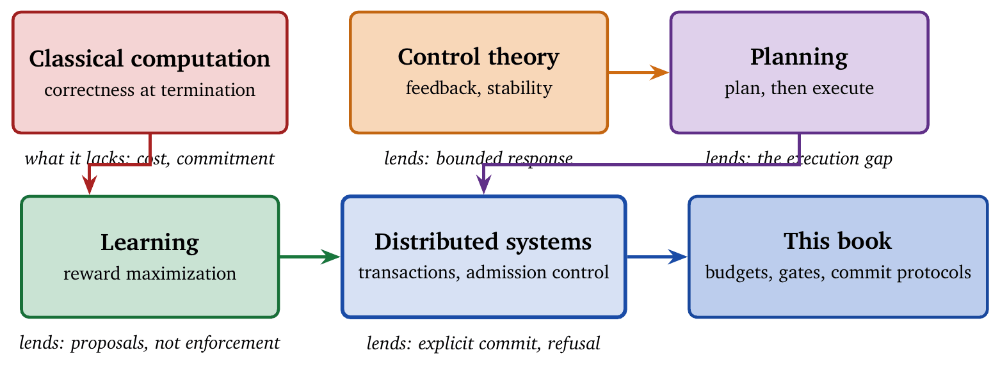
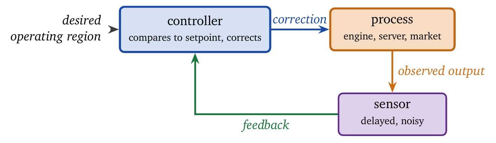

In 1979 a database researcher worried about a bank transfer that debits one account and crashes before crediting the other. In 2026 an engineer worries about an agent that charges a card and crashes before recording the order. These are the same problem, and the first of the two people had a protocol for it.
Modern agents appear new. They are language-driven, tool-using, autonomous, and adaptive, and they arrived quickly enough that the field has largely been reinventing rather than reading. Their characteristic failures, however, were catalogued and largely solved in other disciplines, some of them decades ago: runaway resource consumption, oscillation, acting on stale state, committing to work that cannot be undone.
This chapter surveys that inheritance. It is deliberately incomplete. Its purpose is to show where each of the following chapters obtained its ideas and to make the case that the failures now observed in production are older than they look. It is also the one chapter that can be skipped. Nothing later depends on it, and each borrowed mechanism is developed fully at its point of use. Terms are explained where they first appear, so no background in control theory or transaction processing is assumed. Figure 3.1 summarizes the five traditions and what each contributed.

Classical computer science rests on a precise abstraction: computation is a closed process that transforms an input into an output and then halts. The abstraction has been extraordinarily productive. It underlies algorithm design, complexity theory, compilers, and formal verification. It also excludes, by construction, nearly every phenomenon that governs the behavior of modern agent systems.
The abstraction itself is sound. The difficulty arises when it is applied outside its domain without anyone noticing that a boundary has been crossed.
In the Turing model, correctness is defined relative to termination and final output [1]. A computation that fails to halt has no semantic value, and a computation that halts with the wrong output is incorrect. Partial progress, intermediate states, and resource consumption during execution have no formal status. This notion of correctness suits algorithms and is incompatible with agents. An agent that halts is usually failing, while an agent that continues to operate under its constraints may be succeeding. For agents, correctness has to be defined incrementally, over time, and at every step.
Equally important is the absence of action. A Turing machine modifies symbols on a tape, and those modifications affect nothing beyond the computation. Restarting the computation erases all consequences. Classical computation therefore has no need for a concept of commitment: there is no distinction between tentative and final state, because all state is internal and disposable. This assumption is harmless for algorithms and dangerous for systems that interact with the world, where actions may be irreversible and observable by others.
Cost in classical computation is comparative and asymptotic. Time and space complexity order algorithms by growth rate; they do not constrain execution. Exceeding an expected bound does not invalidate a computation, it merely makes the computation slow. Agent systems operate under absolute limits: deadlines, quotas, budgets, and escalation thresholds. Exceeding one of these terminates execution or triggers a control path that cannot be ignored. Classical cost models do not express the distinction, and when they are applied to agents, budget exhaustion is treated as a performance issue rather than as a correctness failure.
Because classical computation lacks absolute limits, it also lacks budget semantics. There is no notion of refusing to compute because resources are insufficient, and none of reserving resources for future steps. Every computation is implicitly authorized to consume unbounded resources until it terminates. When agent systems inherit this assumption, unbounded verification, retrieval, and retry loops become the default rather than a design error.
A further implicit assumption is reversibility. Classical computation assumes that errors are corrected by restarting, and that corrupted state does not propagate beyond the failed run. Agents accumulate state across decisions, interact with shared environments, and influence other systems, so their errors propagate through memory, configuration, and downstream actions. Restarting does not restore the initial conditions, and any design that relies on implicit rollback is unsound.
The introduction of interactivity did not change these assumptions. Time-sharing systems added preemption and scheduling [3] without changing the semantics of execution; processes could be delayed or terminated, and their actions remained largely reversible and local. Interactivity introduced latency constraints and no commitment semantics, since the system still acted in a reversible environment.
These assumptions persist in modern practice. Many systems still assume that execution is cheap relative to decision-making, that errors can be safely retried, and that state can be discarded without consequence. Each assumption is reasonable for an algorithm and false for an autonomous agent with authority. Agent systems violate every foundational assumption of classical computation: they do not halt cleanly, they act irreversibly, they operate under hard budgets, and they accumulate state across decisions. Treating them as extended algorithms produces systems that are formally well defined and operationally unsafe. The remainder of the book supplies the semantics that classical computation omits; budgets, gates, commitment, abstention, and refusal each fill part of that gap.
The first systems that resemble modern agents did not reason symbolically, learn from data, or optimize explicit objectives. They regulated physical processes, and their primary concern was stability. This is easy to overlook, and it explains why many contemporary agent failures look less like reasoning errors and more like control failures.
Control systems were designed to operate continuously, under uncertainty, and in the presence of noise. They sensed state, acted on the environment, and observed the consequences, all without assuming perfect models or complete information. In these respects they are far closer to deployed agents than classical algorithms are. Figure 3.2 shows the basic loop.

The canonical example is Watt’s centrifugal governor, which regulated the speed of a steam engine by mechanical feedback. The governor continuously adjusted the fuel supply on the basis of the observed rotational speed and stabilized the system without computing anything resembling an optimal solution. Its design objective was bounded behavior rather than maximum efficiency [4], and overshoot and oscillation counted as failures even when average performance was high.
This emphasis on stability introduced a distinction that agent design has had to rediscover: optimality is secondary to safety. A controller that produces slightly suboptimal output and remains stable is preferable to one that achieves higher average performance and occasionally destabilizes the system. The same trade-off reappears in agent design as abstention, refusal, and conservative gating. Systems that always act aggressively fail less often in simulation and more often in production.
Control theory formalized these ideas through feedback loops. A controller observes the current state, compares it to a desired operating region, and applies a corrective action. It does not assume that its actions will have the intended effect; it corrects continuously on the basis of observed outcomes. This contrasts sharply with planning-centric agent designs that assume execution follows intention unless a failure is detected.
Control theory also treated delay as a first-class concern. Delayed feedback can destabilize an otherwise sound controller, so control systems are often deliberately conservative, trading responsiveness for stability. The same logic argues against speculating aggressively in an agent system without accounting for commit latency and verification delay.
Cybernetics generalized these ideas beyond mechanical systems. Wiener argued that intelligent behavior emerges from feedback, and that a system must be evaluated by its trajectory over time rather than by isolated outputs [5]. A system that occasionally produces excellent responses and diverges over time is inferior to one that behaves predictably within bounds.
Early control systems also treated failure as inevitable. Noise, drift, and disturbance were expected, and controllers were designed to degrade gracefully. Many modern agent designs assume instead that reasoning failures are rare and recovery is always possible.
The contrast with symbolic AI is instructive. Control systems act continuously, assume uncertainty, and prioritize stability. Symbolic AI systems plan discretely, assume correct execution, and optimize objectives. Modern agents inherit characteristics of both, and they fail when the second set of assumptions dominates. An agent designed without explicit feedback control behaves as an open-loop system: it chooses actions by internal reasoning and executes them with minimal correction, and in an environment with irreversible effects small errors accumulate until recovery is impossible.
The control-theoretic perspective contributes several primitives that recur throughout the book: explicit feedback, bounded response, conservative action, and stability over optimality. These are preconditions for safe operation in an uncertain environment. This does not mean that an agent should be built as a PID controller, the standard industrial feedback controller that corrects using the present error, its accumulated history, and its rate of change. The transferable lesson concerns ordering. Anything that acts repeatedly on the world has to be designed as a control system first and an intelligent one second. Systems built in the reverse order demonstrate well and misbehave as soon as they are embedded in a real process with real feedback delays.
Classical AI approached agency through planning. An agent was modeled as a system that constructs a plan, a sequence of actions leading from an initial state to a goal state, and then executes it. This made reasoning explicit and symbolic, and it embedded assumptions about execution that fail in real environments.
Early planning systems such as STRIPS described actions by their preconditions and effects. They assumed deterministic actions, complete observability of the state, and negligible execution cost [6]. A plan was correct if, executed exactly as specified, it reached the goal. Execution was treated as a mechanical process whose only responsibility was to follow the plan.
The separation between planning and execution created a structural blind spot. Plans were optimized for logical correctness rather than for robustness under deviation. Unexpected events invalidated plans and required replanning from scratch, and in environments where deviation is common this produces continual replanning and rapid cost escalation.
The assumption that execution is cheap is particularly damaging. Planning systems implicitly authorize arbitrary sequences of actions without regard to cost, latency, or side effects. When such systems are embedded in real environments, verification, retries, and recovery actions accumulate along the execution trace and frequently dominate its total cost.
The gap widens with the horizon. Errors early in a long plan propagate forward and constrain later options, and because planning systems evaluate correctness at the end of execution, they provide no mechanism for intervening early when a plan is becoming unsafe or unaffordable. Attempts to repair this introduced monitoring and replanning: the agent observes a discrepancy between expected and actual state and triggers a new planning phase. This improves logical correctness without addressing the cost structure, since replanning itself consumes resources and repeated monitor–replan cycles can place the system on an expensive critical path.
A deeper issue is that planning systems conflate intention with authorization. Producing a plan implicitly authorizes its actions. There is no decision point at which an action can be refused, deferred, or bounded on the basis of policy, cost, or risk; once a plan is accepted, execution proceeds until a failure is detected. This model is incompatible with environments in which actions are irreversible or constrained by policy. An action that violates a safety constraint cannot be undone by replanning, and an action that exhausts a budget cannot be recovered by generating a new plan.
The reliance on idealized world models compounds the problem. Planning systems assume that all relevant preconditions and effects are known and encoded, whereas in real systems preconditions are often probabilistic, hidden, or adversarial. Plans constructed under incomplete models appear valid and fail at execution time in systematic ways. The planning literature gradually recognized these limitations and introduced contingent planning, execution monitoring, and replanning under uncertainty, while retaining the assumption that planning is the primary locus of control and execution is subordinate.
Modern agent systems often repeat the pattern. A language model generates a plan or a chain of reasoning, which tools then execute. Failures are attributed to poor reasoning rather than to the absence of execution-time control, and verification and safety checks are attached afterward, producing cascades and brittle behavior. Attributing such failures to the planner is a diagnostic error. The execution gap opens because execution was treated as a detail to be handled later, and it closes when the system makes control decisions at execution time: act, verify, abstain, or refuse. These four decisions depend on the state of the world at the moment of acting, which is information a plan built in advance cannot contain. Chapter 9 is devoted to deriving them.
This book adopts the opposite ordering. Plans and proposals are treated as tentative. Authorization, cost, and policy are enforced at execution time rather than assumed at planning time, and the mechanisms introduced in later chapters, gates, budgets, and commit protocols, exist to close the gap that planning-based designs leave open.
Reinforcement learning reframed agents as systems that learn by interacting with an environment, selecting actions to maximize cumulative reward [7]. This addressed a central limitation of classical planning by treating action and consequence as inseparable. It introduced a different abstraction gap, one that becomes critical in deployed systems.
The defining move of reinforcement learning is the reduction of all objectives to a scalar reward. Performance, safety, cost, and policy compliance are encoded, if at all, as components of a single objective. The reduction is convenient for optimization and collapses distinctions that matter operationally; in particular, it replaces hard constraints with soft trade-offs.
In a reward-based formulation, violating a safety constraint is assigned a large negative reward rather than being forbidden. Whether the agent violates the constraint becomes a matter of optimization rather than of admissibility. This is acceptable in simulation, where violations can be sampled, averaged, and penalized, and unacceptable in environments where violations are irreversible or catastrophic.
A related consequence is that rare failures are averaged away. Reinforcement learning optimizes expected return, and a low-probability, high-impact failure contributes little to the expectation unless it is explicitly amplified. Policies that are optimal in expectation may therefore exhibit unacceptable tail behavior, a phenomenon well documented in safety-critical domains where a system performs well until a rare event causes disproportionate damage [9].
Constrained Markov decision processes were introduced to separate rewards from constraints [8]. The formalism restores the distinction between objectives and constraints, and it retains the reliance on expectation: constraints are typically enforced on average over trajectories rather than at every step. For agents that act in the world, step-wise enforcement is often required. An action that violates a policy cannot be justified by compensating future rewards; it must simply not occur, and this requirement lies outside the expressive scope of the standard formulation.
The treatment of cost has the same weakness. When cost enters as a negative reward, the agent learns to be cost-efficient on average and has no mechanism for honoring a hard budget. It may respect the limit most of the time and still occasionally exhaust it, and in an operational system the occasional violation is the one that matters.
Learning systems also assume that policy improvement is the primary path to correctness: failures are data from which the agent learns. This presumes that failures are survivable and that the system continues to operate after them. Agents with real authority do not have this property. Some failures terminate the system or produce irreversible consequences, leaving no opportunity to learn.
Modern agent architectures often combine learned policies with heuristic guards and filters. This improves safety in practice and obscures responsibility: when the system fails, it is unclear whether the cause was the learned policy, the reward specification, or the surrounding control logic, and the entanglement complicates analysis and certification.
The problem is where the learning is placed. Learning is excellent at improving proposals. It suggests which actions might work, which evidence looks relevant, and which plans are plausible. It is a poor sole mechanism for enforcing an invariant, a budget, or a policy, because proposals are permitted to be wrong sometimes and enforcement is not. This book therefore treats learning as a proposal mechanism rather than a control mechanism. Learned components generate candidates; control logic, in the form of gates, budgets, and commit protocols, determines what is executed. The separation restores hard constraints without discarding the benefits of learning. Systems that rely on soft constraints discover the constraints they violated only after the violation has occurred, and an agent that must operate safely cannot afford that mode of discovery.
The need for explicit commitment did not arise in artificial intelligence. It arose in distributed systems, where computation interacts with shared state, partial failure, and irreversible effects, and the solutions developed there address problems that agent systems now encounter in a different form.
Early distributed systems exposed a mismatch between computation and action. Operations that appeared local from the perspective of a program had global effects on shared state, and partial failure made it impossible to assume that an operation either completed fully or not at all. This invalidated the reversibility that classical computation assumed.
Transaction processing systems responded by separating execution from commitment. Two-phase commit introduced a protocol in which participants first prepare to commit and only afterward make their changes durable [10]. The separation allowed a system to reason about tentative actions without exposing irreversible effects prematurely, and commitment became an explicit, coordinated step rather than an implicit consequence of execution.
What the transaction-processing community established, at some expense, is that commitment is a systems-level property. It depends on coordination among participants, on durability, and on a defined story for what happens when a participant disappears in the middle of the protocol. Each participant can be locally correct and the system can still commit at the wrong moment and lose money. That result transfers directly to agents invoking tools, editing configurations, or starting external processes, and Chapter 8 develops it at length.
Distributed systems also normalized failure. Nodes crash, messages are lost, and timeouts occur routinely, so correctness conditions were reformulated to account for partial progress and aborted execution, and systems were designed to make failure visible and manageable rather than exceptional.
Admission control provides a complementary lesson. Systems learned to reject work early when resources were insufficient rather than accepting it and failing later. Refusal became a stability mechanism: a system that declines work preserves its overall correctness better than one that accepts everything and collapses under load. This runs against the instinct that a system should accept whatever work it can, and operators learned the lesson the hard way. Unbounded acceptance produces cascading failure, in which an overloaded component’s slowness becomes its upstream’s queue, which becomes an outage. Agents without an explicit refusal path inherit the whole pattern, and Chapter 9 promotes refusal to a first-class outcome for that reason.
Congestion control makes the same point in a different register. TCP interprets packet loss as an instruction to slow down [11]. A sender that responds to failure by trying harder degrades the network for everyone, itself included, while a sender that backs off obtains more throughput over any interval that matters. Restraint is the throughput strategy. An agent that retries a failing tool faster and faster is rediscovering congestion collapse on someone else’s API.
Security systems refined the notion of authorized action. Capability-based security replaced ambient authority with explicit rights [12]: possession of a capability grants permission to act, and its absence forbids action, regardless of intent, reasoning, or good faith. The model transfers directly to agent tool use. An agent should execute an action because it holds the capability to do so, and for no other reason; authorization precedes reasoning.
These systems share a common structure. Execution is tentative. Commitment is explicit. Refusal is routine. Failure is expected and planned for. None of them optimizes the best case; all of them bound the worst case, which is the appropriate trade when other people depend on the system.
Agent systems keep rediscovering these ideas one at a time and under different names. A verification step is a prepare phase. A tool wrapper is a capability check. A budget cap is admission control. A retry limit is backoff. Discovered piecemeal and wired in ad hoc, the mechanisms interact badly and fail in combination. Specified explicitly, they compose.
Commitment in particular cannot be inferred from intent. It has to be established through protocol, and an agent that acts without commitment semantics has adopted the Turing model in an environment where it does not hold: disposable state, restartable execution, and no external consequences.
The past year has supplied an unusually literal demonstration. Agents built on speculate-then-abort designs turned out to leave the aborted branch resident in the serving session’s key/value cache, where the model continues to attend to it, so a branch the application believes it discarded goes on shaping behavior [13]. Checkpoint-and-rollback machinery, added for exactly this kind of safety, has itself been shown to be attackable [14]. Both findings restate what the transaction community established in the 1970s: an abort that is incomplete is no abort, and completeness is a property that must be engineered.
This book takes the systems view throughout. Actions are proposed, evaluated, and then committed through mechanisms one can point to. Refusal and abstention are outcomes with their own thresholds. Commitment waits until the system can justify it. None of this is conservatism for its own sake; it is what correctness costs once actions are irreversible and failure is ordinary.
Five traditions, and what each contributes.
Classical computation gave us correctness at termination, which is the wrong frame for a system that is failing when it halts. It also gave us cost as an asymptotic comparison rather than an absolute limit, which is why budget exhaustion is still filed as a performance issue instead of a correctness failure.
Control theory contributed feedback, bounded response, and the preference for stability over optimality, together with the ordering claim that anything acting repeatedly on the world is a control system before it is an intelligent one.
Planning research found the execution gap: a plan built in advance cannot contain the information needed to decide, at the moment of acting, whether to act at all.
Learning research showed where learning belongs. It is excellent at proposing and unsuitable as the sole enforcer of an invariant, because proposals may be wrong and enforcement may not.
Distributed systems and transaction processing supplied the rest: execution as tentative, commitment as an explicit protocol, refusal as a stability mechanism, backoff as the throughput strategy, and capability as the basis of authorization.
The through-line is that every one of these disciplines converged on bounding the worst case rather than optimizing the best one, and did so after paying for the alternative.
This chapter is only history. Every mechanism described here is re-derived, badly, by teams that did not know it existed. The cost of not reading it is measured in incidents.
Agents are a new kind of system. They are a new kind of component inside a very old kind of system, one that acts on shared state, under uncertainty, with irreversible effects. The old system’s rules apply.
The classical model applies because the code is classical. The Turing model assumes disposable state, restartable execution, and no external consequence. An agent violates all three and inherits none of the guarantees.
Refusing work is a degraded mode. Admission control exists because unbounded acceptance produces cascading failure. Declining work is how a system stays available.
A mechanism can be borrowed without its assumptions. Two-phase commit assumes participants that can prepare and hold. Optimistic concurrency assumes that conflicts are rare. A mechanism transplanted beyond its assumptions fails silently, and the failure looks like the agent’s fault.
Control theory is a metaphor. Feedback, bounded response, and stability margins are quantitative properties. Used as vocabulary rather than as design constraints, they explain failures without preventing them.
Take a failure you have seen in an agent system and locate it in one of the five traditions above. Name the mechanism that discipline would have applied.
TCP treats packet loss as a signal to slow down. Describe an agent retry policy built on the same principle, and state what signal plays the role of packet loss.
Admission control rejects work when resources are insufficient rather than accepting and failing later. Write the admission test for an agent that must reserve budget for a mandatory finishing step.
The execution gap says control decisions cannot be derived from a plan alone. Give a concrete task where a correct plan still requires a runtime decision to act, verify, abstain, or refuse, and say which of the four applies.
Two-phase commit separates prepare from commit. Map its two phases onto an agent that proposes a database migration, and identify what plays the role of a participant that disappears mid-protocol.
The termination-based notion of correctness originates with Turing [1]; its mismatch with continuously operating systems is the starting point for the reactive-systems literature.
Control theory’s contribution here is Wiener’s cybernetics [17] and the feedback tradition that followed; the stability-over-optimality preference is standard in any control text and is the part most often lost in translation to software.
Classical planning is represented by STRIPS [6]; the execution gap it exposes was addressed by later work on reactive and contingent planning. Sutton and Barto [7] cover the learning tradition, including why penalty terms are a poor substitute for hard constraints.
The transaction-processing lineage runs through Gray’s work on commit protocols [10] and the broader treatment in [16]; sagas for long-running transactions are due to Garcia-Molina and Salem [15]. Congestion control as restraint-for-throughput is Jacobson [11]. Capability-based authorization derives from Saltzer and Schroeder [12].
The two contemporary results cited in the closing section, incomplete abort through retained cache state [13] and the attackability of checkpoint/rollback machinery [14], are the clearest recent demonstrations that these old lessons are still being relearned.
A. M. Turing. On computable numbers, with an application to the Entscheidungsproblem. Proceedings of the London Mathematical Society, 42(2):230–265, 1936.
D. E. Knuth. The Art of Computer Programming, Volume 1: Fundamental Algorithms. Addison–Wesley, 3rd edition, 1997.
F. J. Corbató, M. M. Daggett, and R. C. Daley. An experimental time-sharing system. Proceedings of the AFIPS Fall Joint Computer Conference, 1962.
S. Bennett. A History of Control Engineering, 1800–1930. IEE Control Engineering Series, 1979.
N. Wiener. Cybernetics. Or Control and Communication in the Animal and the Machine. MIT Press, 1948.
R. E. Fikes and N. J. Nilsson. STRIPS: A new approach to the application of theorem proving to problem solving. Artificial Intelligence, 2(3–4):189–208, 1971.
R. S. Sutton and A. G. Barto. Reinforcement Learning. An Introduction. MIT Press, 2nd edition, 2018.
E. Altman. Constrained Markov Decision Processes. Chapman & Hall/CRC, 1999.
D. Amodei, C. Olah, J. Steinhardt, P. Christiano, J. Schulman, and D. Mané. Concrete problems in AI safety. arXiv:1606.06565, 2016.
J. Gray. Notes on data base operating systems. In Operating Systems. An Advanced Course, Springer, 1978.
V. Jacobson. Congestion avoidance and control. ACM SIGCOMM, 1988.
J. H. Saltzer and M. D. Schroeder. The protection of information in computer systems. Proceedings of the IEEE, 63(9):1278–1308, 1975.
Guijia Zhang and Harry Yang. “Aborted but Not Forgotten: KV-Cache Retention Breaks Rollback Consistency in Language Agents.” arXiv:2608.15939, 2026.
Guanlong Wu et al. “Safe to Resume? Breaking Execution Continuity of Agent Execution via Rollback.” arXiv:2608.29381, 2026.
H. Garcia-Molina and K. Salem. Sagas. In ACM SIGMOD, 1987.
J. Gray and A. Reuter. Transaction Processing: Concepts and Techniques. Morgan Kaufmann, 1992.
N. Wiener. Cybernetics. Or Control and Communication in the Animal and the Machine. MIT Press, 1948.